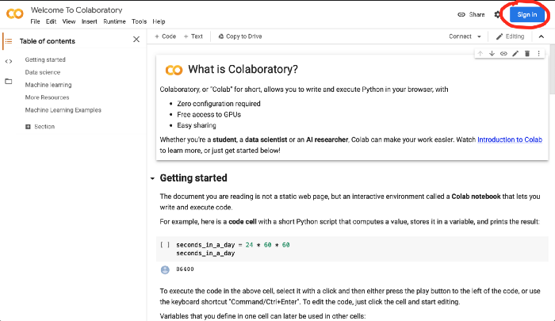
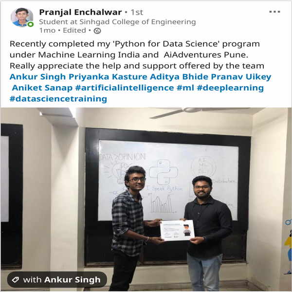

Getting Started¶
About this course¶
During the course of the next week, we aim to get you acquainted with Python and expose you to industrial Data Science projects. Strap in, cause it is going to be a fun ride!
Python For Data Science is an action-packed program for Python and Data Science enthusiasts who want to acquire practical skills for real-world data problems. We came up with this initiative to help a beginner get started with Data Science.
It appeals to anyone interested in pursuing a career in Data Science or Machine Learning, and is looking to acquire some foundation skills. The curriculum for ‘Python for Data Science’, is developed in consultation with experts to ensure a high degree of relevance in accordance with the needs and demands of the industry.
Course methodology¶
Implementation focused: This course aims to make students learn by coding themselves rather than watch someone else. We have found that this method of learning makes the students independent and facilitates them to learn new technologies in the future with ease.
Asking for help: Students programming for the first time will naturally need help. Remember that we are here to help! Don’t be afraid to ask for help regarding any topic you come across.
Not a classroom: We encourage you to interact not just with other students, but with the mentor as well. If you need a break, you can simply take one! No need to ask.
One-to-one Mentor: Once you join, you will also be assigned a mentor who will make sure that your learning is seamless and will help you make the best out of this program.
Course content¶
Expressions - The most basic type of Python instruction.
Flow Control - Make programs decide which instructions to execute so your code can respond to different conditions.
Loops - Repeat a list of operations using loops.
Functions - Organize your code into more manageable chunks using functions.
Built-in Data Structures - Use lists, tuples, dictionaries and sets to manage your data better.
Project - In project we will be building a game named 3 Missionaries 3 Cannibals.
Course Target¶
The goal of the program is to provide an introduction to Python and educate the participants on how it is applied in the domain of Data Science. The curriculum will cover everything ranging from variables and expressions to loops and functions, and will involve the development of simple yet brain-teasing games, using the fundamentals of Python.
Complete beginner to programming: The course material should be a perfect fit for you :). The material starts with the fundamentals of programming. Python is a great language to learn as your first language because of its simple learning curve so you have made the right decision choosing it!
Familiarity with other languages: Your task is to map the syntax. You already know the basics of programming and you just have to figure out how to replicate what you know in python.
Used Python before: Shoot for the moon! Make full use of this opportunity, ask a lot of questions and interact with your peers.
Python Programming Language¶
In this data-driven age, Python has become an essential tool for many programmers, engineers, researchers, and data scientists across academia and industry.
Being an AI start-up focused on building and promoting the Machine Learning and Data Science, we have found Python to be a near-perfect fit for the types of problems we face day to day, whether it’s developing small web-apps, extracting meaning from large datasets, scraping and munging data collected from the Web, or automating day-to-day tasks.
The appeal of Python is in its simplicity and beauty, as well as the convenience of the large ecosystem of domain-specific tools that have been built on top of it. For example, most of the Python code in scientific computing and data science is built around a group of mature and useful packages:
NumPy provides efficient storage and computation for multi-dimensional data arrays.
SciPy contains a wide array of numerical tools such as numerical integration and interpolation.
Pandas provides a DataFrame object along with a powerful set of methods to manipulate, filter, group, and transform data.
Matplotlib provides a useful interface for creation of publication-quality plots and figures.
Scikit-Learn provides a uniform toolkit for applying common machine learning algorithms to data.
IPython/Jupyter provides an enhanced terminal and an interactive notebook environment that is useful for exploratory analysis, as well as creation of interactive, executable documents. For example, this course was developed entirely using Jupyter notebooks.
No less important are the numerous other tools and packages which accompany these: if there is a scientific or data analysis task you want to perform, chances are someone has written a package that will do it for you.
To tap into the power of this data science ecosystem, however, first requires familiarity with the Python language itself. Our aim, with this course, is that students will walk away with a solid foundation about python and programming (in general).
What is Google Colab¶
Google Colab is an environment that runs completely on a cloud. It handles all the setup and configuration required for your program. So that you can start writing your first program.
How to use Google Colab?¶
Running code in Google Colab is as easy as opening any website. It requires just 2 steps. Yes, you heard it correct.
Sign into Google colab.
Create a new notebook.
To Sign in to google colab, you need to go to this url
The home page of the Google Colab looks like below:

That’s it. Now you can start writing your code.
What else?¶
Spread the word¶
Like what you see? Make sure to spread the word about this course on social media and don’t forget to mention us on it.

Courses offered by aiadventures¶
Python
Python is one of the most sought-after skills by employer and one of the most widely used language too.
Learn MoreData Science
With the rise in the amount and rate at which data is generated, Data Science has become more important than ever.
Learn MoreMachine Learning
With the help of machine learning computers can perform tasks without being precisely programmed to do so.
Learn MoreYou can check all our courses here
FAQs¶
1. Why this course?
This course is 100% free! We also use a different training model as opposed to classroom training which can be mundane and also unfair as it doesn’t go by everyone’s pace. With AI Adventures, you have access to a self paced course which covers the fundamentals of python with a strong focus on implementation.
2. What will you learn by the end of the course?
By the end of this course, you will be able to write simple but useful python programs and also be confident in your ability to learn new technologies and concepts.
3. Why learn python?
Python is one of the most widely used programming languages. It has a strong open source community and is used in various domains like machine learning, web development, scientific computing and many more. It was rated the most important skill on the stack overflow developer survey for the past two years in a row!
4. How can I learn machine learning?
If you like what we have to offer, we have a comprehensive course on machine learning which is built from the ground up! You will learn about data cleaning using modules like pandas and numpy. The course also covers data analysis and visualizations through matplotlib and seaborn. We then proceed to explore the theory of machine learning and implement it using sklearn!